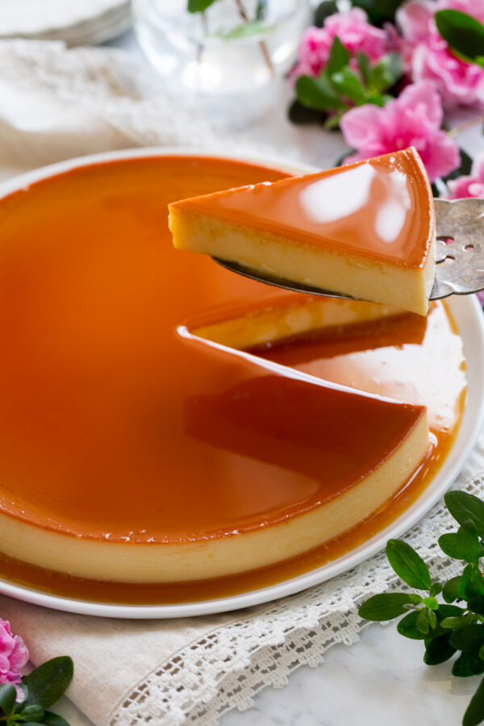

Flan

Description
Many cultures around the world have their own version of the popular flan dessert. This version is my mom's famous Vietnames flan cake, which is always a hit at family gatherings. It is delicate and silky smooth, and contrasts well with the caramelized sugar syrup.
Ingredients
- Sugar
- Eggs
- Half and half cream
- Milk
- Vanilla
- Rum
Steps
- Make the caramel by cooking sugar and water in a pot on medium low heat. Take off the stove once it is a dark golden colour. Quickly pour it in your baking pan.
- Combine the eggs and put it through a sieve. Set aside.
- In a large pot, combine the cream, milk and sugar. Cook on medium heat until the sugar has melted and the mixture is warm.
- Slowly ladle the mixture into the eggs and mix. Once everything is combined, put it through the sieve a few more times.
- Add vanilla and rum and mix.
- Pour everything into the baking pan. Bake in the oven with a water bath for 30 minutes at 350 F.